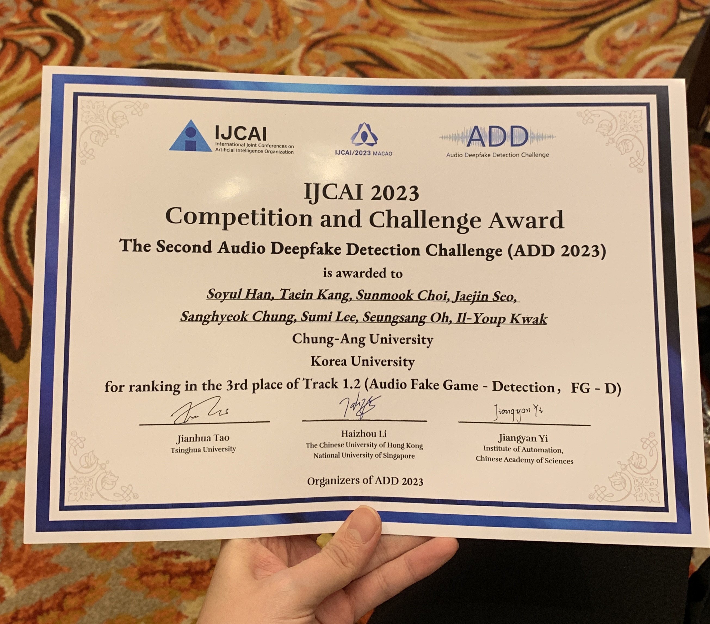
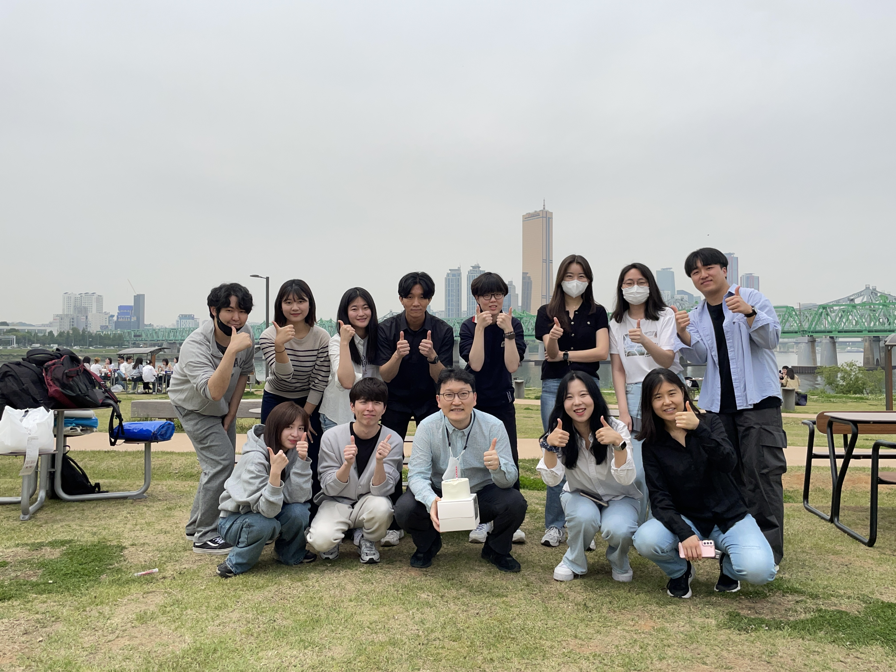
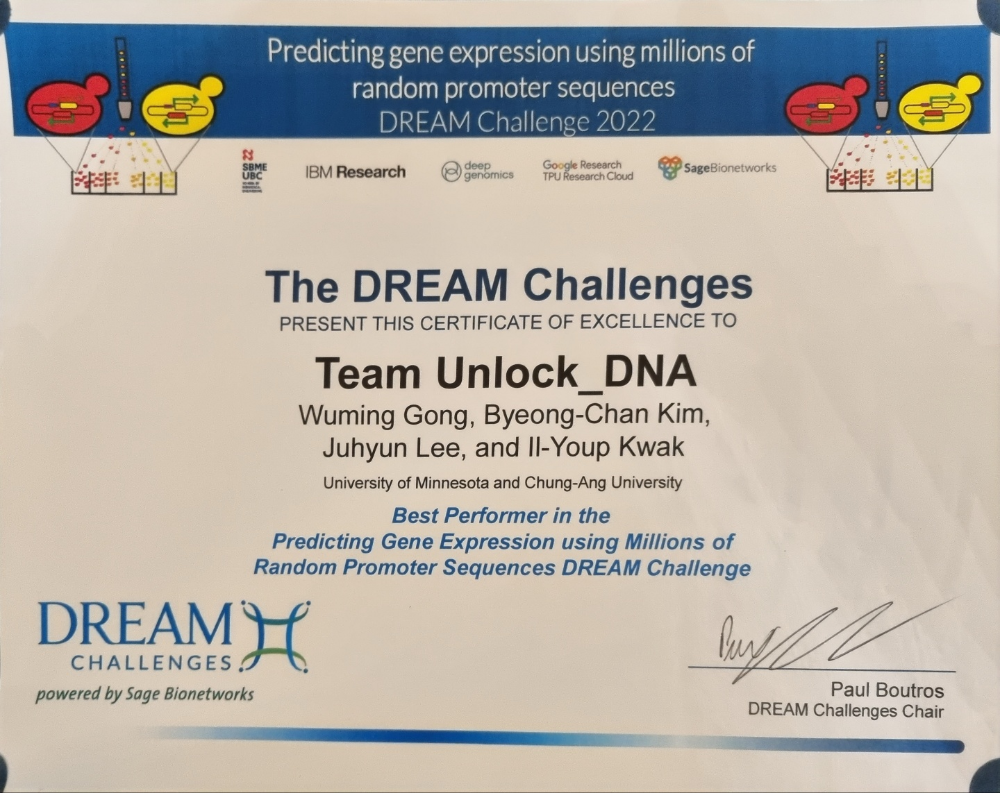
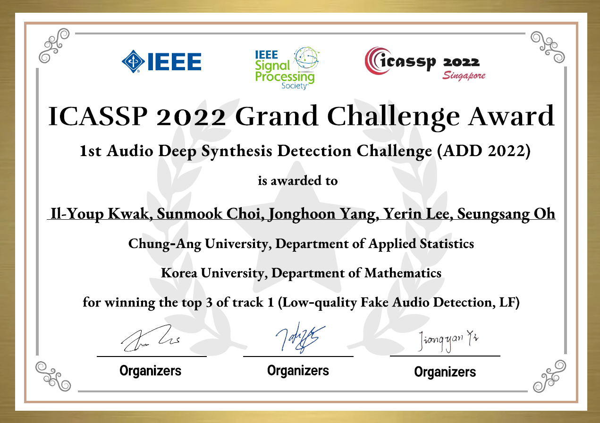

2023.8 Soyul is presenting at the IJCAI 2023 Workshop, Macao, China.

2023.8 CAU_KU team received 3rd place award at the ADD competition (IJCAI 2023 Grand Challenge)

2023.5 Teacher's Day group photo (2023)

2022.11 Wuming (mid) and Juhyun (right) received a winners certificate from Pablo (left) at RSGDREAM 2022, Las Vegas, USA
2022.11 DREAM challenge winners certificate (3rd place)

2022.9 Taein (left) and Jungguk (right) doing poster presentation at CinC 2022, Tampere, Finland.

2022.1 CAU_KU team received 3rd place award at the ADD competition (ICASSP 2022 Grand Challenge)
